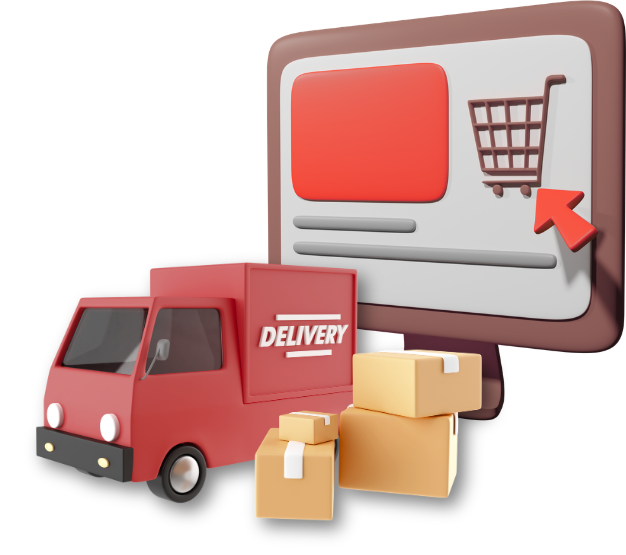
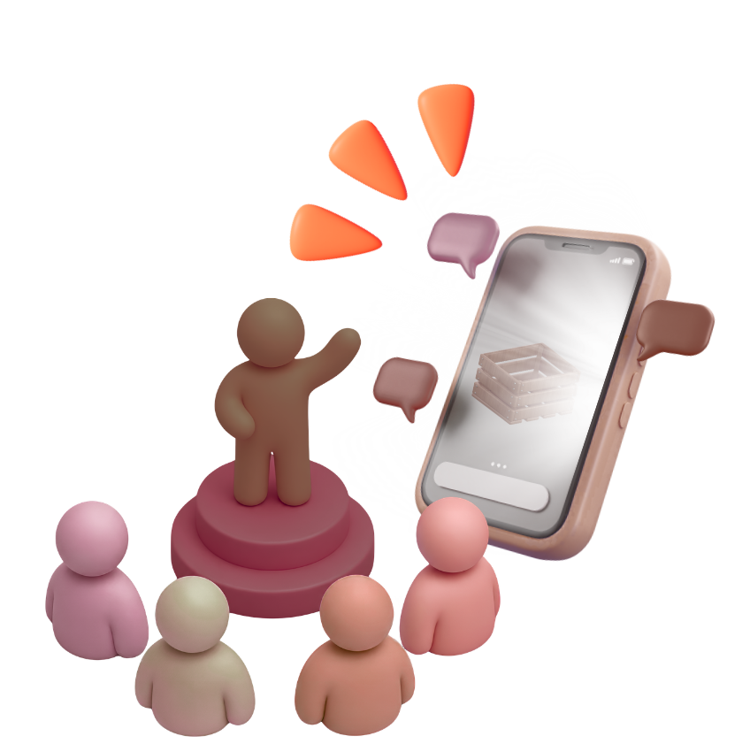
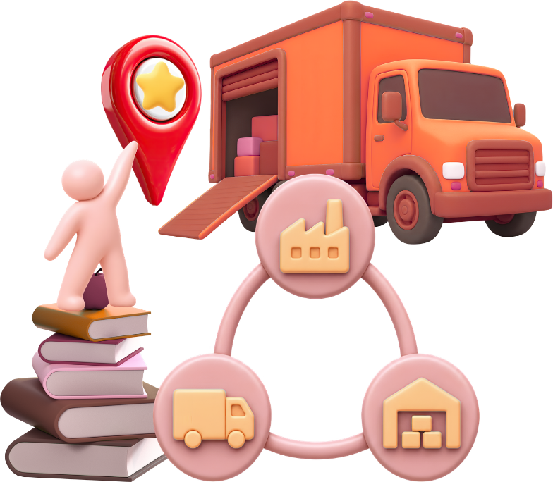

For sari-sari store owners and suppliers
Smarter inventory, fast deliveries, better business
SariLink is designed to help stores track inventory and help suppliers plan restocking across partner stores throughout Baguio City.

By tracking stock levels in real time, SariLink helps ensure products are restocked before they run out, keeping shelves full and customers satisfied.

Help small businesses increase sales while also helping suppliers optimize their delivery operations by modernizing the way stores manage inventory and deliveries.

SariLink is an inventory monitoring and smart delivery platform that connects Tiong San with sari-sari stores throughout Baguio City. Ready to help when needed.
- Develop and improve the SariLink platform.
- Enhance inventory monitoring and delivery features.
- Expand our services to more suppliers and sari-sari stores.
- Support local businesses through smarter technology.
Together, we can create a more efficient supply network that benefits suppliers, store owners, and the communities they serve.
Invest in the Future of Local Retail! We're developing SariLink to transform how suppliers and sari-sari stores work together. With your support, we can continue building a platform that helps businesses reduce inventory shortages, streamline deliveries, and improve customer satisfaction.
SariLink is a smart inventory monitoring and delivery management platform that connects suppliers with sari-sari stores. It helps suppliers monitor inventory levels and allows store owners to receive timely restocking before products run out.
SariLink is designed for suppliers, distributors, and sari-sari store owners. Suppliers can monitor inventory across their partner stores, while store owners can manage their stock and track incoming deliveries in real time.
Store owners enter their product inventory into the system and set a minimum safety stock level for each item. When the quantity reaches the preset limit, SariLink automatically notifies the supplier. The supplier can then plan deliveries based on stores that need replenishment, while store owners can monitor the status of their incoming orders.
SariLink can monitor a wide range of products supplied to sari-sari stores, including canned goods, snacks, beverages, instant noodles, household essentials, and bakery products.
The system displays inventory levels on a dashboard using color indicators. Stores with low inventory are grouped by location, allowing suppliers to deliver to multiple nearby stores in a single trip. This helps save time, reduce transportation costs, and improve delivery efficiency.
SariLink only collects business-related information such as inventory records, store details, and delivery status. It does not collect sensitive personal or financial information. All information is intended solely for inventory monitoring and delivery coordination, and access is limited to authorized users. Suppliers can only view inventory data from stores that have agreed to participate in the platform, ensuring that business information remains protected and shared only with permission.
No. Suppliers can only access the inventory information of sari-sari stores that are registered as their partner stores and have authorized data sharing through SariLink.
SariLink helps suppliers improve delivery planning, reduce unnecessary trips, and respond to low-stock situations more quickly. For sari-sari store owners, it minimizes stock shortages, simplifies inventory management, and provides real-time updates on incoming deliveries, resulting in better service for customers.
Together, we share the same vision of building technology that empowers local businesses, improves supply chain efficiency, and supports the growth of neighborhood sari-sari stores.
Project Manager
Web Developer
Web Designer
Encoder